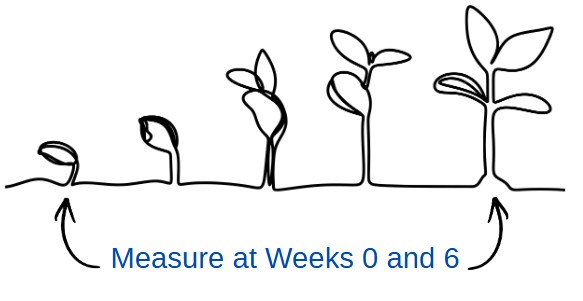
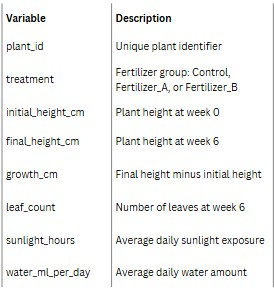
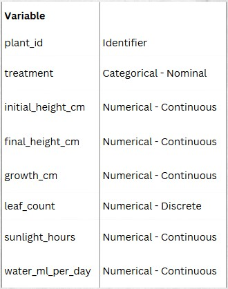
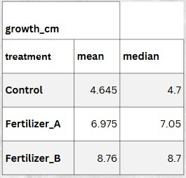
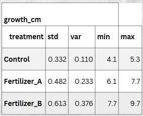

Every analysis starts with a well-defined research question.
Our Research Question
Does fertilizer affect plant growth over a six-week period?




Tip
Which measure is more robust to outliers?

Warning
Standard deviation and variance are sensitive to outliers.
Replace with figures from PowerPoint.
Insert scatterplot graphic.
A 95% confidence interval is produced by a method that would capture the true population value about 95% of the time over repeated samples.
Insert decision tree from original slides.
Examples: - t-test - ANOVA - Pearson correlation - Linear regression
Examples: - Mann–Whitney U - Wilcoxon - Kruskal–Wallis - Spearman correlation
Use when:
Types:
Effect size tells us how large an effect is.
Examples:
What do these results tell us?
Pause before revealing discussion.